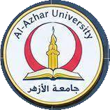
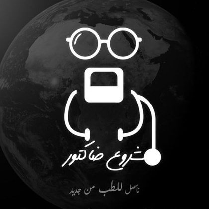

← العودة لبنك الأسئلة الرئيسي
🔊
الصوت: مفعل


امتحانات الدفعة 61 الرسمية |
CVS Official Exams
كلية الطب بنين بالقاهرة - جامعة الأزهر الشريف | إعداد وتدقيق: أحمد وائل
⭐ حلول أكاديمية معتمدة 100%
✓ لؤلؤة طبية وشرح لكل سؤال
امتحان نهاية الموديول الرسمي
End Module Exam • 80 MCQ • 40 Marks • شامل 7 مواد
📋
امتحان نهاية الفصل الدراسي الرسمي
End Semester Exam • 64 MCQ + 8 مقالي • 50 Marks
🎓
🎯 تصفية الأسئلة حسب المادة:
وضع التمرين التفاعلي
المراجعة الشاملة (عرض الكل)
إجمالي أسئلة القسم
80
تمت الإجابة
0
إجابات صحيحة
0
إجابات خاطئة
0
نسبة الدقة
0%
مدى تقدمك في هذا القسم
0% مكتمل
تشريح
سؤال رسمي رقم 1
End Module
السؤال 1 من 80
Loading question text...
💡 اللؤلؤة الطبية والشرح الأكاديمي النموذجي:
Explanation text...
→ السابق
التالي ←
🔄 أعد حل هذا السؤال
إعادة تعيين هذا القسم
🧭 لوحة الانتقال السريع بين الأسئلة:
الحالي
صحيحة
خاطئة
لم يُحل